Агартуучу, жазуучу жана Ата Мекендин баатыр коргоочусу. Анын өмүрү — бүтүндөй бир доордун чагылдырылышы.
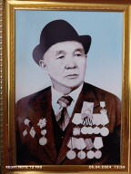
Сыдыков Чолук · Кегети айылы
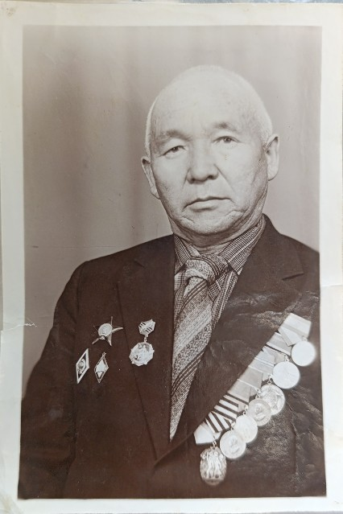
Архивдик сүрөт
Сыдыков Чолук 1924-жылы Чүй облусунун Кегети айылында дыйкандын үй-бүлөсүндө туулган. Анын жашоосунун ар бир барагы элге кызмат кылууга, билим берүүгө жана мекенди сүйүүгө арналган.
Анын жаштыгы оор сыноолорго туш келип, 1942-жылы өз каалоосу менен Улуу Ата Мекендик согушка аттанган.
Согуштан кийин Чолук Сыдыков өмүрүн билим берүүгө арнады. Ал 45 жыл бою мугалимдик кесипти аркалап, миңдеген жаштарга жол көрсөттү.
Согуштагы эрдиги жана эмгектеги жетишкендиктери үчүн берилген орден, медаль жана ардак белгилери.
Чолук Сыдыков педагогика менен бирге адабият айдыңында да из калтырган жазуучу. Анын чыгармалары сүйүүнү, мекенди жана адамдын рухун ырдайт.
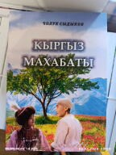
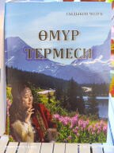
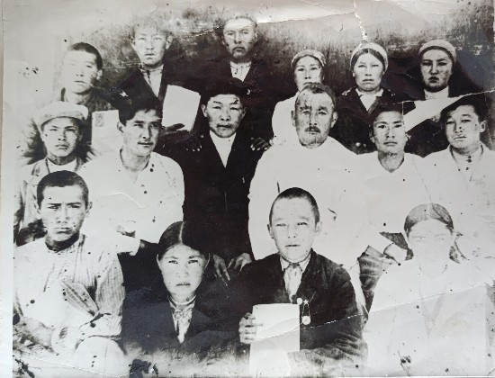
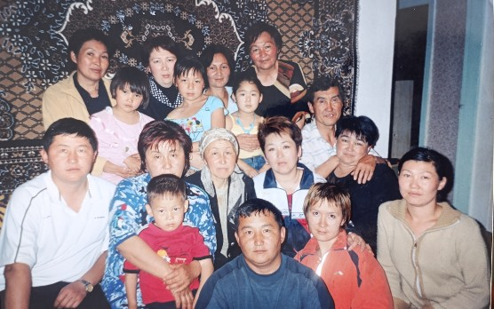
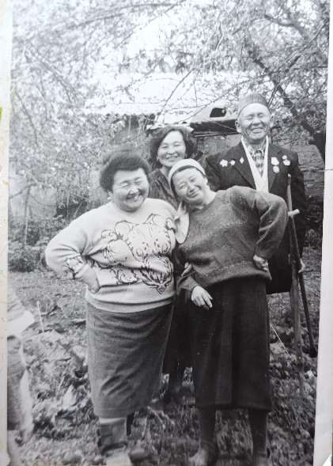
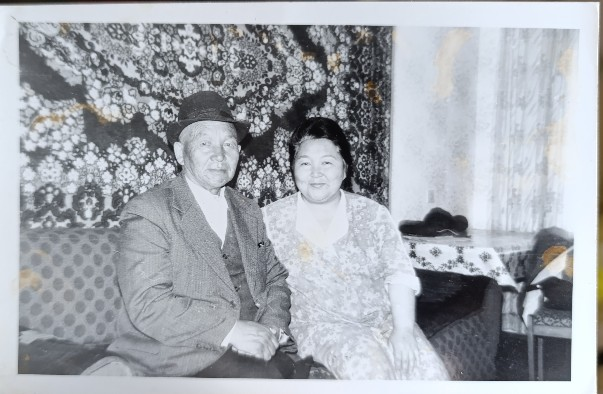
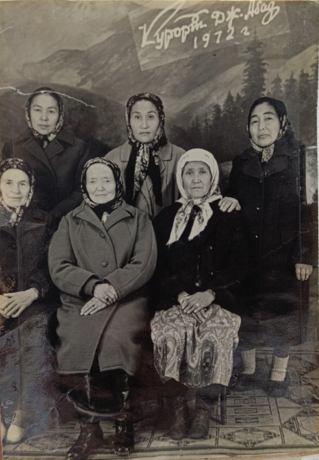
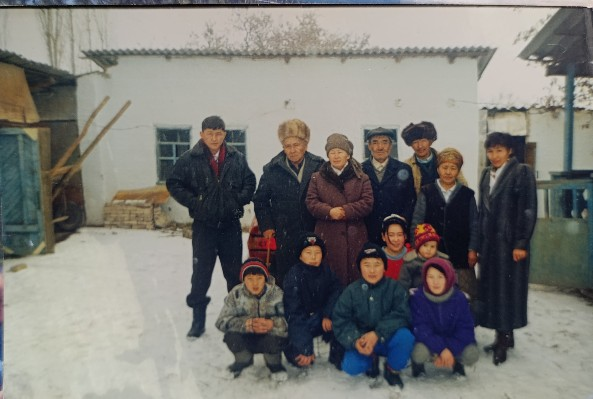
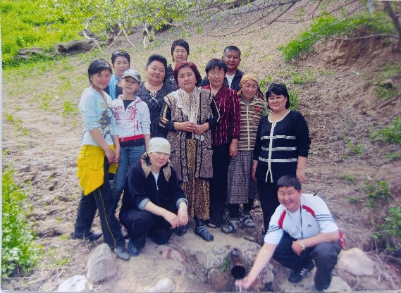
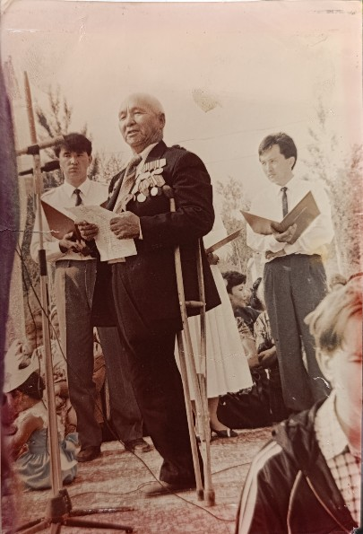
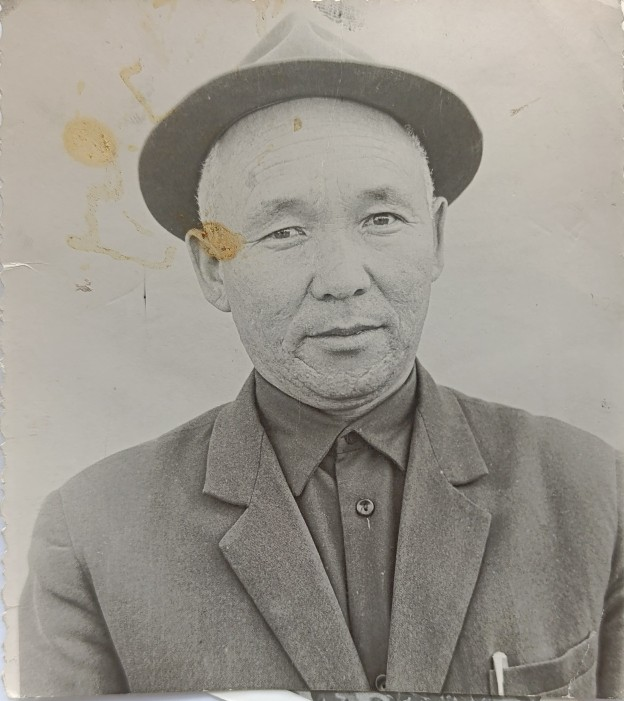
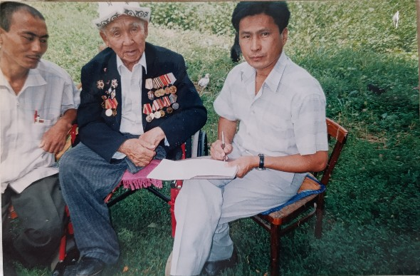
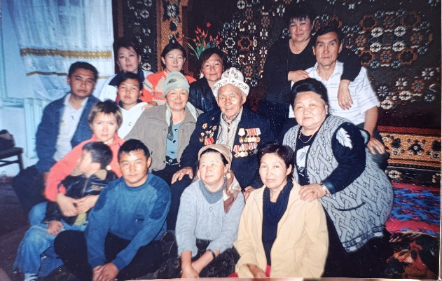
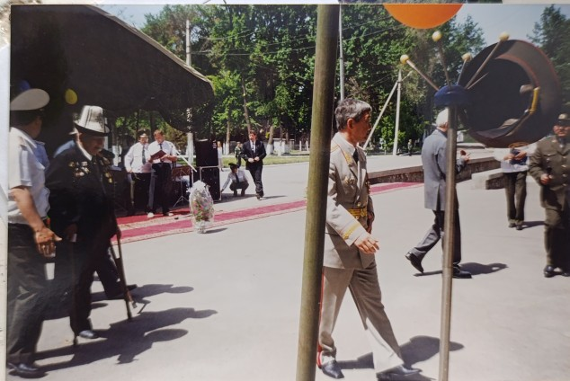
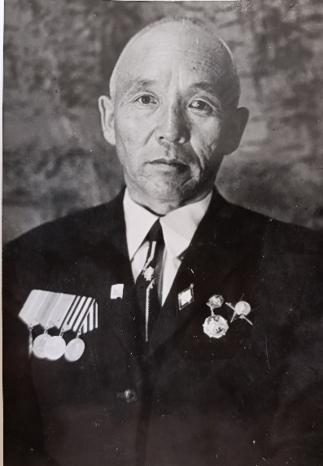
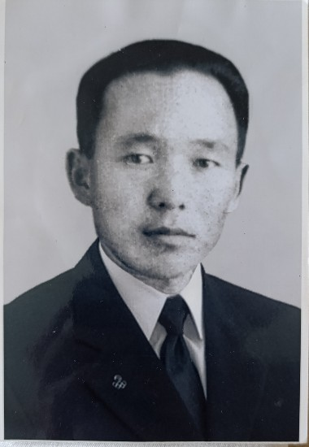
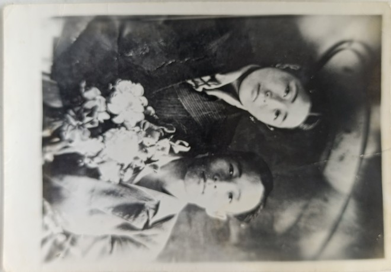
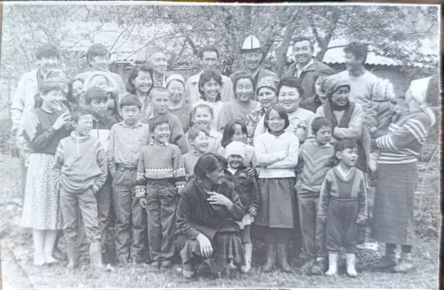
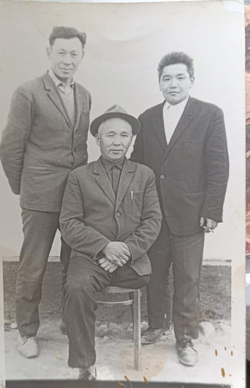
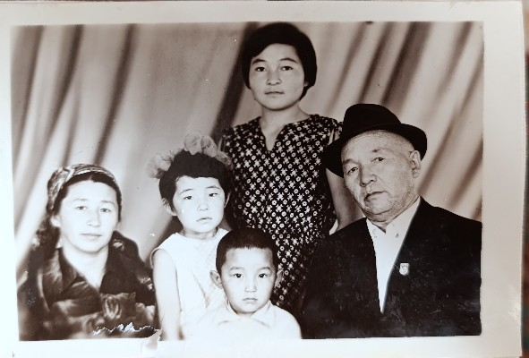
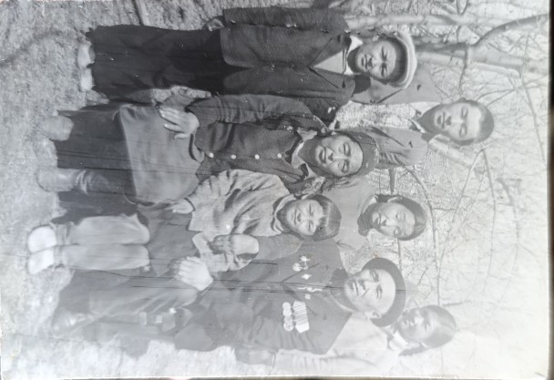
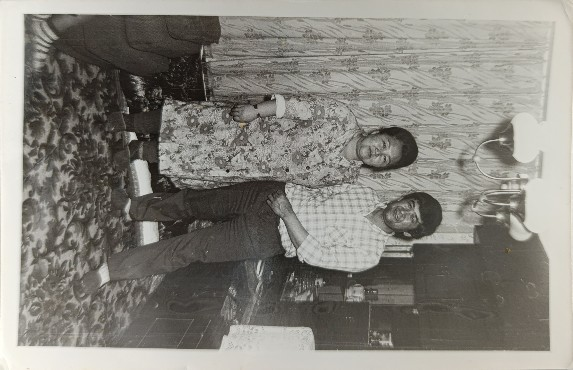
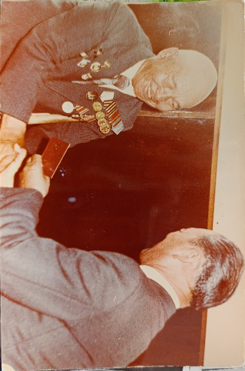
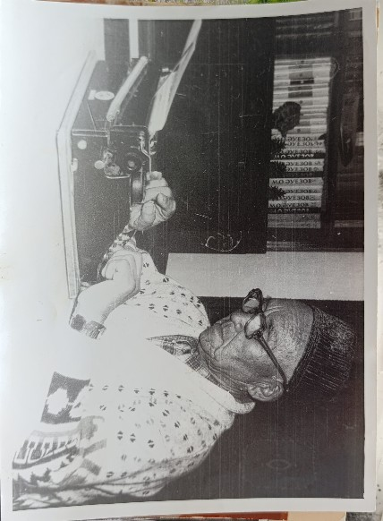
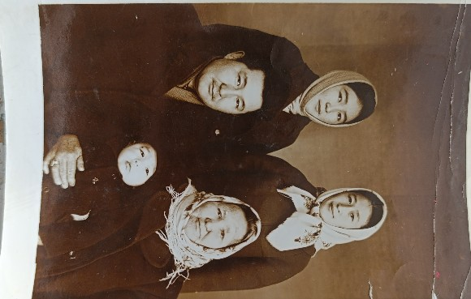
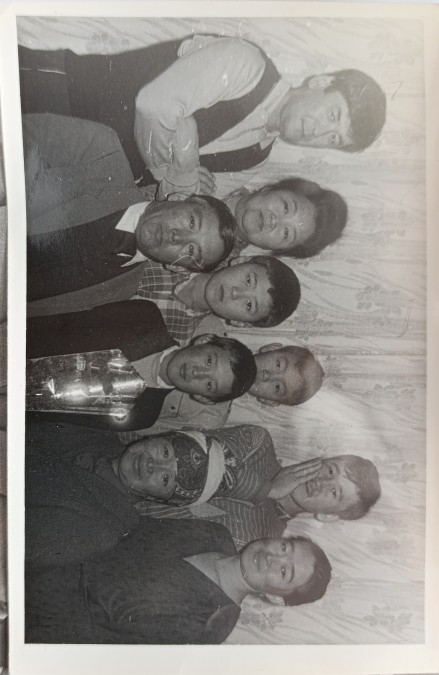
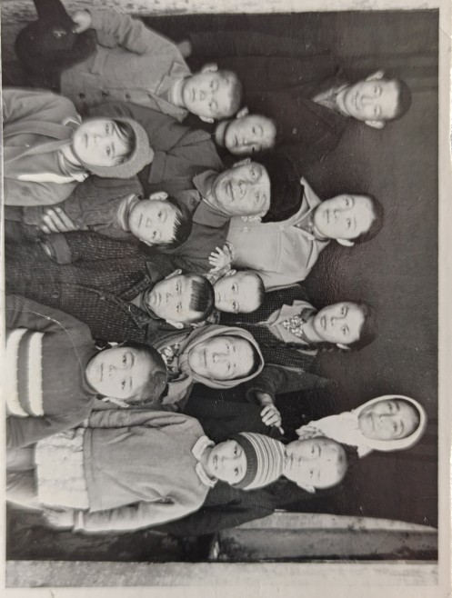
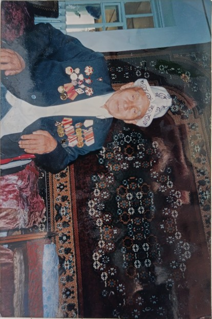
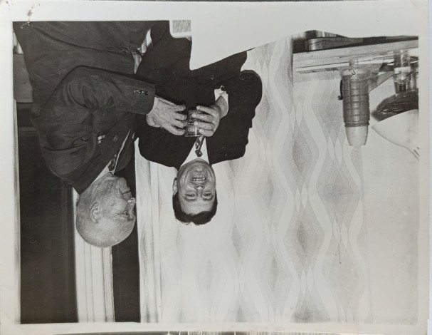
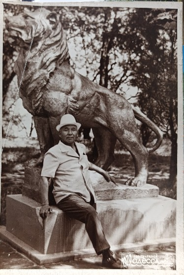
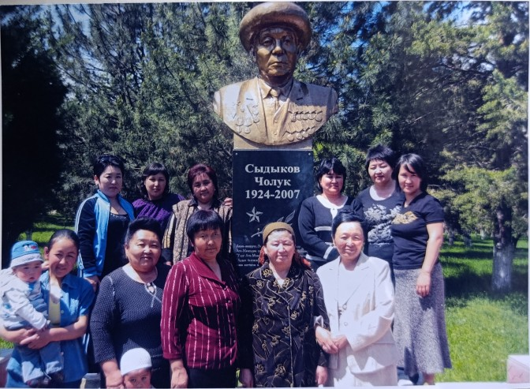